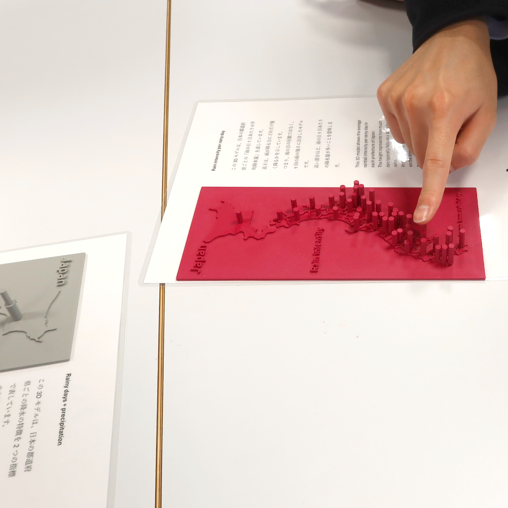

Skip to content
Anders Blomqvist
Research
Make
Photography
About
Anders Blomqvist
Aesthetically resilient, thematically interrelated material for memory and projection.

Research
Learning, inquiry, science.
Make
Cameras, constructions, instruments.
Photography
Photographs and selected work.